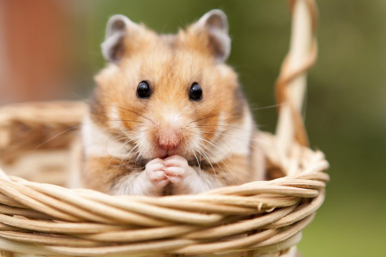

Кто такие хомяки?
ХОМЯК-это милейшие создания на планете Земля.Они очень маленькие создания.они питаются фруктами и ягодами.Зелень для хомяков очень полезна.Они являются грызунами.Они очень популярные как домашние животные.Живут они 2-3 года.Также есть хомяк в трейдинге не путайте животное с ТЕРМИНОМ!